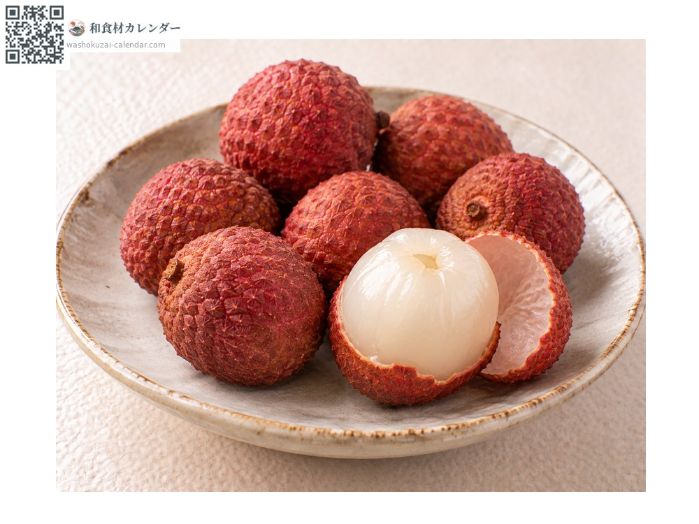
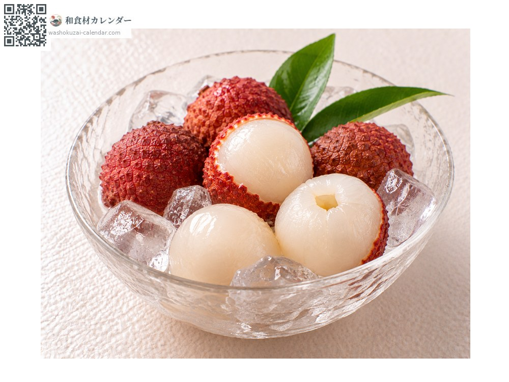
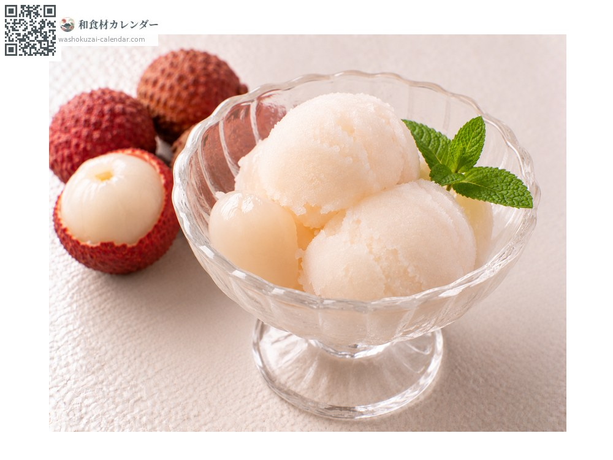
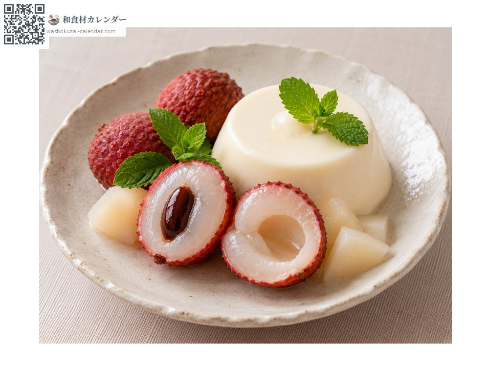

果物
ライチ
らいち
別名・別表記茘枝、レイシ、reishi
旬は7月・8月

旬の時期
1月
2月
3月
4月
5月
6月
7月
8月
9月
10月
11月
12月
旬出回り
調理法

そのまま
皮をむいて食べる。国産の完熟は香りが濃厚。

冷やして
軽く冷やす。冷やしすぎると香りが飛ぶ。

シャーベット
果肉を凍らせる。香りが際立つ。

デザートの飾り
半分に切って添える。白い果肉が美しい。
選び方
皮が赤くふっくらとして、傷のないもの。持って弾力があるもの。
保存方法
乾燥すると皮が黒ずむ。袋に入れて冷蔵し、2〜3日以内に。
主な産地
豆知識
宮崎県新富町の「完熟ライチ」は樹上で完熟させてから収穫するブランドで、輸入の冷凍品とは別物とされる。収穫後すぐに香りが落ちるため、輸入品は完熟前に採る。楊貴妃が好んだ果物として知られる。